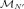

PythonFieldFunction¶
-
class
PythonFieldFunction(*args)¶ Override FieldFunction from Python.
- Parameters
Examples
>>> import openturns as ot >>> mesh = ot.Mesh(1) >>> def myPyFunc(X): ... mesh = X.getMesh() ... values = X.getValues() * ([2.0]*X.getValues().getDimension()) ... values.setDescription(ot.Description.BuildDefault(values.getDimension(), 'Y')) ... Y = ot.Field(mesh, values) ... return Y >>> inputDim = 2 >>> outputDim = 2 >>> myFunc = ot.PythonFieldFunction(mesh, inputDim, mesh, outputDim, myPyFunc)
Methods
__call__(self, \*args)Call self as a function.
getCallsNumber(self)Get the number of calls of the function.
getClassName(self)Accessor to the object’s name.
getId(self)Accessor to the object’s id.
getImplementation(self, \*args)Accessor to the underlying implementation.
getInputDescription(self)Get the description of the input field values.
getInputDimension(self)Get the dimension of the input field values.
getInputMesh(self)Get the mesh associated to the input domain.
getMarginal(self, \*args)Get the marginal(s) at given indice(s).
getName(self)Accessor to the object’s name.
getOutputDescription(self)Get the description of the output field values.
getOutputDimension(self)Get the dimension of the output field values.
getOutputMesh(self)Get the mesh associated to the output domain.
isActingPointwise(self)Whether the function acts point-wise.
setInputMesh(self, inputMesh)Set the mesh associated to the input domain.
setName(self, name)Accessor to the object’s name.
setOutputMesh(self, outputMesh)Set the mesh associated to the output domain.
-
__init__(self, *args)¶ Initialize self. See help(type(self)) for accurate signature.
-
getCallsNumber(self)¶ Get the number of calls of the function.
- Returns
- callsNumberint
Counts the number of times the function has been called since its creation.
-
getClassName(self)¶ Accessor to the object’s name.
- Returns
- class_namestr
The object class name (object.__class__.__name__).
-
getId(self)¶ Accessor to the object’s id.
- Returns
- idint
Internal unique identifier.
-
getImplementation(self, *args)¶ Accessor to the underlying implementation.
- Returns
- implImplementation
The implementation class.
-
getInputDescription(self)¶ Get the description of the input field values.
- Returns
- inputDescription
Description Description of the input field values.
- inputDescription
-
getInputDimension(self)¶ Get the dimension of the input field values.
- Returns
- dint
Dimension
 of the input field values.
of the input field values.
-
getInputMesh(self)¶ Get the mesh associated to the input domain.
- Returns
- inputMesh
Mesh The input mesh

.
- inputMesh
-
getMarginal(self, *args)¶ Get the marginal(s) at given indice(s).
- Parameters
- iint or list of ints,

Indice(s) of the marginal(s) to be extracted.
- iint or list of ints,
- Returns
- fieldFunction
FieldFunction The initial function restricted to the concerned marginal(s) at the indice(s)
 .
.
- fieldFunction
-
getName(self)¶ Accessor to the object’s name.
- Returns
- namestr
The name of the object.
-
getOutputDescription(self)¶ Get the description of the output field values.
- Returns
- outputDescription
Description Description of the output field values.
- outputDescription
-
getOutputDimension(self)¶ Get the dimension of the output field values.
- Returns
- d’int
Dimension
 of the output field values.
of the output field values.
-
getOutputMesh(self)¶ Get the mesh associated to the output domain.
- Returns
- outputMesh
Mesh The output mesh .
- outputMesh
-
isActingPointwise(self)¶ Whether the function acts point-wise.
- Returns
- pointWisebool
Returns true if the function evaluation at each vertex depends only on the vertex or the value at the vertex.
-
setInputMesh(self, inputMesh)¶ Set the mesh associated to the input domain.
- Parameters
- inputMesh
Mesh The input mesh .
- inputMesh
-
setName(self, name)¶ Accessor to the object’s name.
- Parameters
- namestr
The name of the object.